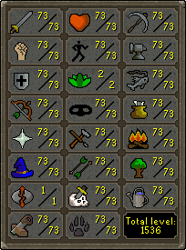
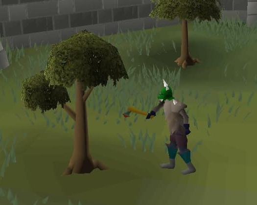
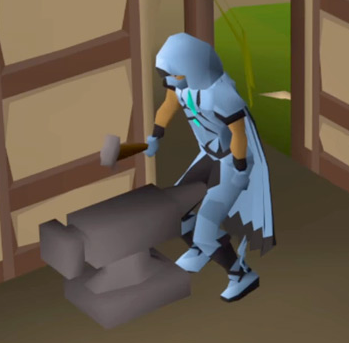
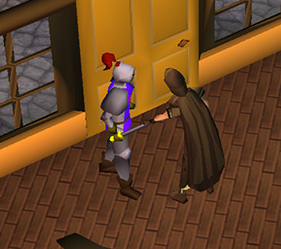

Levels
There are 23 different skills available to train in Old School Runescape. Each of the skills start at level 1
(with the exception of hitpoints, which starts at 10), and can be trained to a maximum level of 99. This results in a maximum
total level of 2277.
Each level gained in a skill grants a slight bonus to that skill, with certain milestone levels unlocking different content.
Each action performed related to the skill grants a small amount of experience points. The experience needed for each level
starts out small, at 81 xp needed to advance to level 2. However, each subsequent level requires exponentially more experience,
resulting in a total of 13 million experience to reach level 99.

Combat
The combat skills are Attack, Strength, Defence, Ranged, Prayer, Magic and Hitpoints. These will be
described in detail on the Combat page.
Gathering
The Gathering skills consist of Farming, Fishing, Hunter, Mining, and Woodcutting. These skills involve
obtaining resources or items from the environment. These resouces can be sold as is to other players,
or transformed in some way through the Artisan skills.

Artisan
The Artisan skills are Construction, Cooking, Crafting, Firemaking, Fletching, herblore, Runecraft, and Smithing.
These skills take the raw resources obtain from Gathering skills or monster drops and transform them into useful
materials such as armor or potions.

Support
Agility, Slayer, and Thieving are the final skills which do not fall into the other categories. Agility
allows players to access certain shortcuts by climbing walls or other obstacles. Slayer allows players to
complete assignments by killing a specified amount of a certain monster. Thieving allows the player to pickpocket
gold or items from NPCs.
